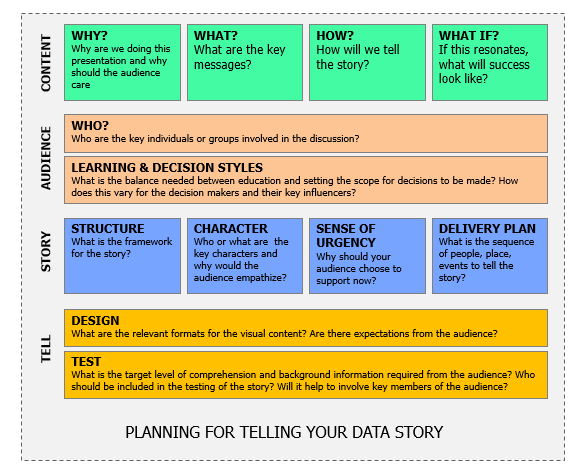

Data Science Track¶
Analytics Lifecycle¶
Problem Framing```{toggle}¶
| Processes | Key Activities
|-----------|---------------
| Problem Definition |</li><li>Identify and characterize the business problem or need</li><li>Manage the problem definition and impact</li><li>Support the justification for effort</li><li>Reformulate problem statement as an analytic problem</li><li>Identify assumptions related to the problem and proposed solution</li><li>Refine the business and analytics problem statement
| Root Cause Investigation |</li><li>Utilize brainstorming techniques and effectively use divergent thinking processes to uncover potential cause-and-effect relationship</li><li>Classify requirements appropriately and determine feasibility</li><li>Apply root cause analysis to requirement definition
Hypotheses Generation |</li><li>Generate (and manage) testable hypotheses</li><li>Validate expected results and key requirements information with stakeholders</li><li>Generate testable theories and validate their reasonableness</li><li>Shadow workflows that are not understood</li><li>Conduct primary and secondary research as needed to understand potential sources of the issue
| Question Design |</li><li>Utilize the FINER criteria to evaluate whether a problem can be translated into a question that can be answered</li><li>Convert a question into a proper study design |
| Business Case Prioritization |</li><li>Prioritize requirements based on business value, cost to deliver, and time constraints</li><li>Validate that solution design meets the business need</li><li>Define the capabilities needed to support solution</li><li>Manage the metrics related to solution implementation and success
### Data Sense Making
```{toggle}

Processes |
Key Activities |
|---|---|
Data Identification and Prioritization |
|
Data Collection and Preparation |
|
Data Profiling and Characterization |
|
Visual Exploration |
Analytics Model Development¶
Processes |
Key Activities |
Example Methods |
|---|---|---|
Making Comparisons |
||
Measuring Associations |
||
Making Predictions |
||
Detecting Patterns |
Results Activation¶

Processes |
Key Activities |
|---|---|
Solution Evaluation |
|
Operationalization |